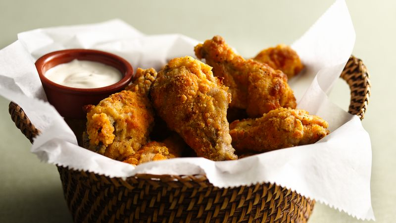

SuperHotWings

For those who love all the heat and fire that a chicken wing can deliver, we offer you this recipe. Hot sauce heat levels vary considerably, so choose wisely!
Ingredients
- 1 cup Frank's™ RedHot™ Original cayenne pepper sauce
- 1 teaspoon garlic salt
- 24 chicken drummettes
- 2 tablespoons butter or margarine
- 1 cup Original Bisquick™ mix
- 3/4 teaspoon onion salt
- 1/4 teaspoon cayenne pepper
- Blue cheese dressing
Steps
- Stir together hot sauce and garlic salt until blended. Pour over drummettes; cover and refrigerate at least 4 hours but no longer than 24 hours.
- Heat oven to 450°F. Melt butter in jelly roll pan, 15 1/2x10 1/2x1 inch, in oven. Stir together Bisquick mix, onion salt and peppers. Remove chicken from sauce; discard sauce. Coat chicken with Bisquick mixture. Place in single layer in pan.
- Bake 25 minutes; turn and bake an additional 20 to 25 minutes or until chicken is golden brown and juice is no longer pink when centers of pieces are cut. Serve with dressing.